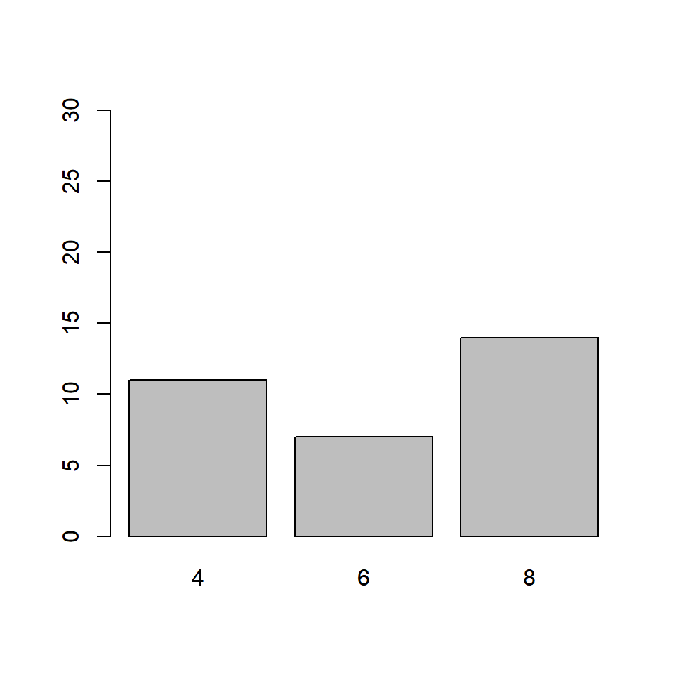

Introduction
This is the fifth post in the series Data Visualization With R. In the previous post we learnt how to build line graphs. In this post, we will visualize categorical data using univariate and bivariate bar plots.
Bar Plot
A bar plot represents data in rectangular bars. The length of the bars are proportional to the values they represent. Bar plots can be either horizontal or vertical. The X axis of the plot represents the levels or the categories and the Y axis represents the frequency/count of the variable.
Univariate Bar Plot
A univariate bar plot represents a single categorical variable. The categories in the variable are represented on the X axis and their frequencies on the Y axis. In the below example, the cyl variable from the mtcars data set is visualized using a bar plot. The categories or levels are 4, 6 and 8 which represent the number of cylinders in the automobile and are represented on the X axis. The frequency for each type of cylinder is represented by the Y axis.
In R, bar plots can be created using either the plot() or barplot() function. The input to both the functions are different. In case of the plot() function, we can specify the variable but it must be converted to a factor variable. In case of the barplot() function, the input must be the count or frequency of the variable. The table() function can be used to generate the counts/frequency for a variable. Let us use both the functions to create the bar plot:
Using plot function
plot(as.factor(mtcars$cyl))
Using barplot function
barplot(table(mtcars$cyl))
If you observe carefully, the same plot is generated by both the functions. We will use the barplot() function for the rest of the post. Before we explore the bar plots further, let us store the data in a new variable instead of using the table() function in every example:
cyl_freq <- table(mtcars$cyl)
cyl_freq##
## 4 6 8
## 11 7 14Horizontal or Vertical
Bar plots can be horizontal or veritcal (which is the default). Use the horiz argument in the barplot() function to build a horizontal bar plot. As you can see, the axis have been flipped. The Y axis represents the categories and the X axis represents their counts/frequencies.
barplot(cyl_freq, horiz = TRUE)Bar Width
In the bar plot, the width of the bars and the space between them are same. A specific category of the variable can be highlighted by increasing/decreasing the width of the bar representing it. In our example, we will increase the width of the bar that represents automobiles with 8 cylinders. The width argument is used to specify the width of the bars. The width must be specified for all the bars in the plot. It must be a vector the length of which must be equal to the number of categories of the variable.
Equal Width
barplot(cyl_freq, width = 2)
Different Widths
In the below example, the width of the third bar is twice the width of the other two bars
barplot(cyl_freq, width = c(1, 1, 2))In the below example, the width of the second bar is half the width of the other first bar and the third bar is twice the width of the first bar.
barplot(cyl_freq, width = c(1, 0.5, 2))
The space between the bars can be specified in a similar manner but using the space argument in the barplot() function:
In the below example, the space between the third bar and the second bar is twice the space between first and second bar.
barplot(cyl_freq, space = c(1, 1, 2))Labels
It is important to add appropriate labels to the bars in order to communicate properly. In our example, the bars represent automobiles with different number of cylinders. The labels likewise indicate the number of cylinders represented by the bars. In order to demonstrate how to add labels, we will change the labels from numbers to their corresponding words. The names.arg argument is used to add labels to the bars in a plot. Below is our example:
barplot(cyl_freq, names.arg = c('Four', 'Six', 'Eight'))
It is important to specify labels for all the bars in the plot else R will return an error.
Color
Let us add some color to the plots. In a bar plot, we can specify different colors for the bars and their borders. Use the col argument to add color to the bars.
Same color for all bars
barplot(cyl_freq, col = 'blue')
Differnt color for the bars
barplot(cyl_freq, col = c('blue', 'red', 'green'))What happens if we do not specify color for all the bars? The colors you specify are recycled.
Recycling colors
barplot(cyl_freq, col = c('blue', 'red'))The border argument specifies the color of the border of the bars. The rules that apply to col argument apply here also. Below are the examples:
Same color for all bars
barplot(cyl_freq, border = 'blue')
Differnt color for the bars
barplot(cyl_freq, border = c('blue', 'red', 'green'))What happens if we do not specify color for all the bars? The colors you specify are recycled.
Recycling colors
barplot(cyl_freq, border = c('blue', 'red'))
Axes
In this section, we will learn to
- remove axes from the plot
- specify the line type of the X axes
- offset the Y axes
Remove axes
The axes argument can be used to retain/remove the axes from the plot. It takes logical values as input and the default is TRUE. Set it to FALSE to remove the axes from the plot:
barplot(cyl_freq, axes = FALSE)
If we decide to retain the axes, the line type of the X axes can be specified using the axis.lty argument. It does not modify the line type of the Y axes and it will not work if the axes argument is set to FALSE.
barplot(cyl_freq, axis.lty = 3)
Though we cannot modify the line type of the Y axes, we can offset it using the offset argument. In the below example, we will offset the Y axes and you can observe that the minimum value of the Y axes is now 5 instead of 0.
barplot(cyl_freq, offset = 5)
You can similarly modify the range of the Y axes using the ylim argument. Although in case of bar plots, modifying the range of the plot may not be very useful.
barplot(cyl_freq, ylim = c(0, 30))
Let us quickly revise what we have learnt so far in this post and build a bar plot for visualizing the cyl variable in the mtcars data set:
barplot(cyl_freq, col = c('blue', 'red', 'green'),
horiz = TRUE, width = c(1, 1, 2),
names.arg = c('Four', 'Six', 'Eight'),
axis.lty = 2, offset = 2)
Well the plot looks good but for someone who does not know the underlying data, it will diffficult to understand what is being communicated. Let us add a title and labels for the axes.
barplot(cyl_freq, col = c('blue', 'red', 'green'),
horiz = TRUE, width = c(1, 1, 2),
names.arg = c('Four', 'Six', 'Eight'),
axis.lty = 2, offset = 2)
title(main = 'Distribution of Cylinders',
xlab = 'Frequency', ylab = 'Number of Cylinders')
Bivariate Bar Plots
A bivariate bar plot represents the cross table or two way table of categorical variables. They are of two types:
- Stacked Bar Plots
- Grouped Bar Plots
Before we look at bivariate bar plots, let us create a two way table of cyl (number of cylinders) and gear (number of gears) using the table() function:
table(mtcars$gear)##
## 3 4 5
## 15 12 5cyl_gear <- table(mtcars$cyl, mtcars$gear)
cyl_gear##
## 3 4 5
## 4 1 8 2
## 6 2 4 1
## 8 12 0 2The number of gears is represented by the columns in the table and the numbe rof cylinders is represented by the rows.
Stacked Bar Plot
barplot(cyl_gear)The bars in the plot represent the distribution of cyl for each level of category of the gear variable. The first bar represents the distribution of cylinders for automobiles with 3 gears. From the two way table we saw earlier, the columns are the bars. The rows are represented by different sections of the bar. Let us add some colors to the plot as the default colors of the plot are not very intuitive. It will also allow us to clearly examine the distribution of cyl for the different levels of gear.
barplot(cyl_gear, col = c('blue', 'red', 'green'))
If you carefully observe the table and the plot:
- the blue sections of the bars represent the number of automobiles with 3 gears and 4 cylinders
- the red sections represent the number of automobiles with 4 gears and 6 cylinders
- the green sections represent the number of automobiles with 5 gears and 8 cylinders
We need to convey the above information in some way and will do that using the legend.text argument. It takes logical values as inputs and the default values is FALSE. It adds a legend to the plot when it is set to TRUE. In the next example, we add a legend as well as other relevant information such as title and axis labels.
barplot(cyl_gear, col = c('blue', 'red', 'green'),
main = 'Gears vs Cylinders', legend.text = TRUE,
xlab = 'Number of Gears', ylab = 'Frequency')
Grouped Bar Plot
A grouped bar plot represents the same data as the stacked bar plot but instead of being stacked, the bars are now grouped and placed besides each other.
barplot(cyl_gear, col = c('blue', 'red', 'green'),
beside = TRUE, legend.text = TRUE,
main = 'Gears vs Cylinders',
xlab = 'Number of Gears', ylab = 'Frequency')
The beside argument in barplot() function is set to TRUE to build grouped bar plots. It takes logical values as inputs and the default values is FALSE. As you can observe from the plot, the bars are placed besides each other instead of being stacked.
Summary
In this post, we learnt how to build
- univariate bar plots
- bivariate bar plots
and explored various arguments within the barplot() function such as
horizcolborderspacewidthnames.argoffsetlegend.text
to modify and enhance the appearance of the plot. In the next post, we will learn how to build box plots.